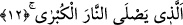

Cennette kendisine hurma ağacı verilmek üzere ensar kardeşine vermesini ister, ancak o
münafık: “Ben peşin olan bir malı veresiye satmam, bunu yapamam” der. Bunun üzerine
Hz. Osman (r.a.) ona kendisine âid bir hurma bahçesini verir. Bunun üzerine yukarda
okuduğumuz âyet-i kerime iner.
Buna benzer bir olay da şöyle olmuştur: Adamın birisi Peygamber (s.a.) Efendimiz’in
bir ihtiyacını giderir. Peygamber Efendimiz (s.a.) ona “Medine’de bana gel” der. Adam
Medine’de Peygamber Efendimiz’e (s.a.) gider. Peygamberimiz (s.a.): “Senin için hangi
seçenek daha sevimlidir? seksen adet koyun mu yoksa Allah’a duâ edeyim de seni
Cennette benimle komşu mu yapsın?” adam; “hayır, hayır seksen koyun daha sevimlidir”
der. Peygamber Efendimiz (s.a.) sahabîlere “ona seksen koyunu verin” der. Sonra şöyle
der: “Hz. Mûsâ (a.s.)’ın yaşamış olduğu buna benzer olaydaki kadın senden daha
akıllıdır.” Onun zamanında yaşlı bir kadın Mûsâ (a.s.)’a Hz. Yusuf (a.s.)’ın mezarının
ve kemiklerinin bulunduğu yeri gösterir. Hz. Mûsâ kadına; “senin için hangisi daha
sevimlidir. Allah’a duâ edeyim de seni Cennette bana komşu mu kılsın yoksa yüz koyun
mu alırsın?” Kadın bu soruya “Cenneti tercih ederim” diye cevap verir.
Bir iyiliğe yüz karşılık olduğunu bilen
Bu amaçla hemen iyilikte bulunur.
Toprak yemeğe alışan kimsede toprak arzusu olur
O bîçâre gülbeşekeri sindiremez.
12. Ki o en büyük ateşe girecektir.
Yani o Cehennemin tabakalarından en alt tabakaya girecektir.
Bu Cehennemin ateşi, diğer derekelerdeki Cehennem ateşinden daha şiddetli ve
yakıcıdır. Burası Firavun taraftarlarının, münâfıkların ve Hz. İsâ (a.s.)’ın gökten gelen
sofrasını inkâr edenlerin yeridir. Küçük ateş ise Cehennemin üst tabakasında Hz.
Muhammed (s.a.) ümmetinin günahkârlarının yeridir.
Âyette yer alan “el-kübra” ismi tafdîl’dir. Çünkü bu kelime “el-ekber” kelimesinin
müennesidir. Bu, tercümeden de anlaşılacağı üzere “en büyük ateş”dir. Burası kâfirlerin
payına düşen Cehennem tabakalarının en altıdır. Nitekim Allah Teâlâ bir âyet-i
kerimede Cehennemin en alt katı olduğuna şöyle işâret eder: “Şüphe yok ki münafıklar
Cehennemin en alt katındadırlar.” (Nisa, 4/145) Cehennemin tabakaları içerisinde bu
alt tabakadan sonra onun üzerinde tabakalar vardır. Çünkü Cehennemin birbirinden
farklı derecede ateşi ve tabakaları vardır. Tıpkı dünyada işlenen günah ve mâsiyetlerin
birbirinden farklı olmaları gibi. Nasıl ki kâfirler âsî olanların en bedbahtıdır orada da